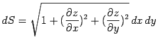
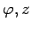
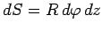
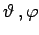
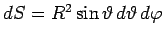
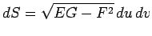

Inhalt Index DeskTop Bronstein

 Integralrechnung Oberflächenintegrale Oberflächenintegrale 1. Art
Integralrechnung Oberflächenintegrale Oberflächenintegrale 1. Art


| Koordinaten | Flächenelemente |
| Kartesische Koordinaten x, y, z=z(x,y) |  |
| Zylindermantel Koordinaten  |
 |
| Kugeloberfläche Koordinaten  |
 |
| Beliebige krummlinige Koordinaten u,v (E,F,G s. Differential des Bogens) |
 |